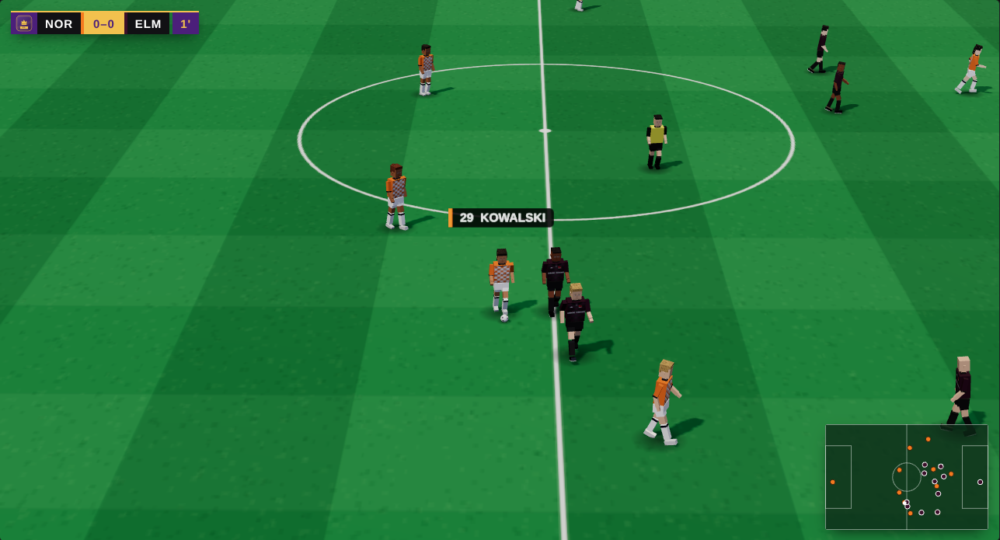

Football management, played from the dugout

Dugout Manager puts you in charge of a football club and every decision that comes with it. Pick from 240 clubs in six countries, each with its own crest, kits, stadium and history, and decide what kind of manager you want to be.
Matches are not dice rolls. Twenty-two players move, press, pass and shoot in a positional engine running ten times a second, so the shape you set on the tactics board is the shape you see on the pitch. Watch the highlights in a broadcast-style 3D view with walkouts, anthems, replays and a live radar, switch to a clean tactical 2D view, or take the instant result and read the analysis afterwards.
Between matches there is a club to run. Agree fees and then talk terms with agents on the phone. Scout three continents of talent, develop your academy, send youngsters on loan, keep your promises about playing time, face the press, and keep the board and the fans on side. Win the league, lift the domestic cup and chase the Continental Elite Cup, then do it again, season after season.
Paste-ready text for your store page, written to Steamworks' field lengths. Replace the requirements with your own once you have tested the packaged build.